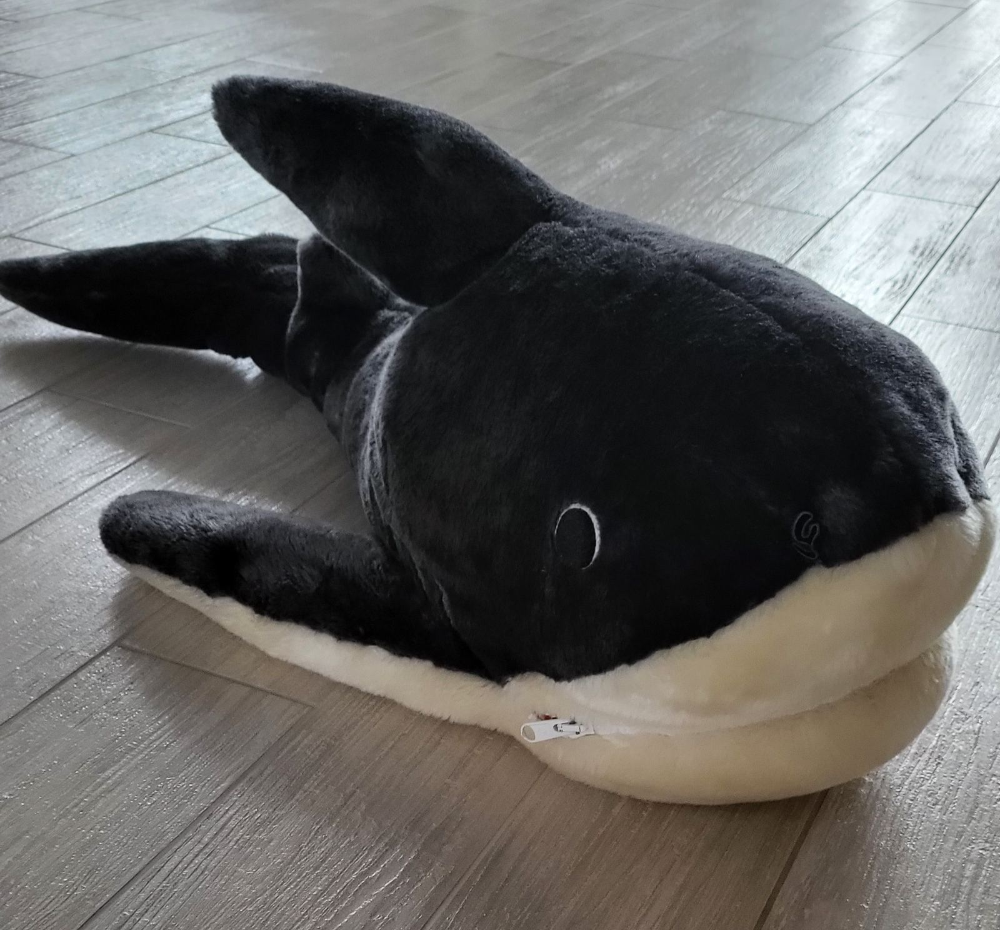

Цікаві породи акул.
Аку́ли (лат. Selachii) — надзагін хрящових риб (Chondrichthyes), що відноситься до підкласу пластиножаберних
(Elasmobranchii) і володіє наступними відмінними особливостями: подовжене тіло більш-менш торпедоподібної
форми, великий гетероцернікальний.
